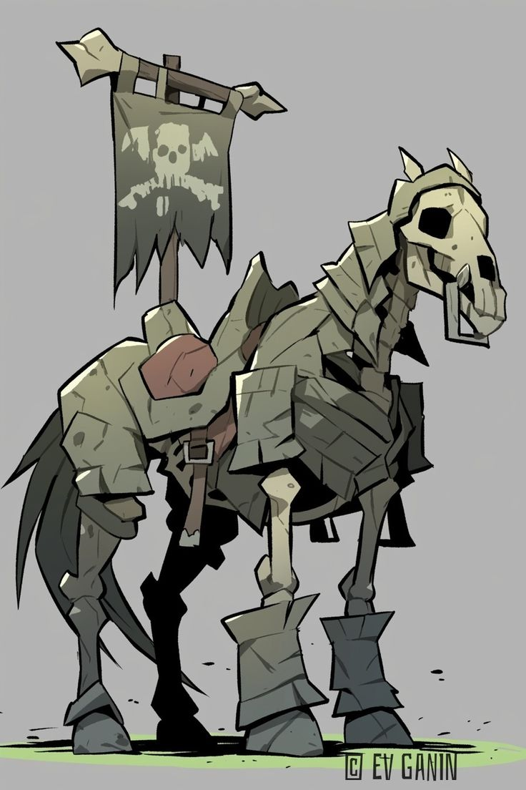
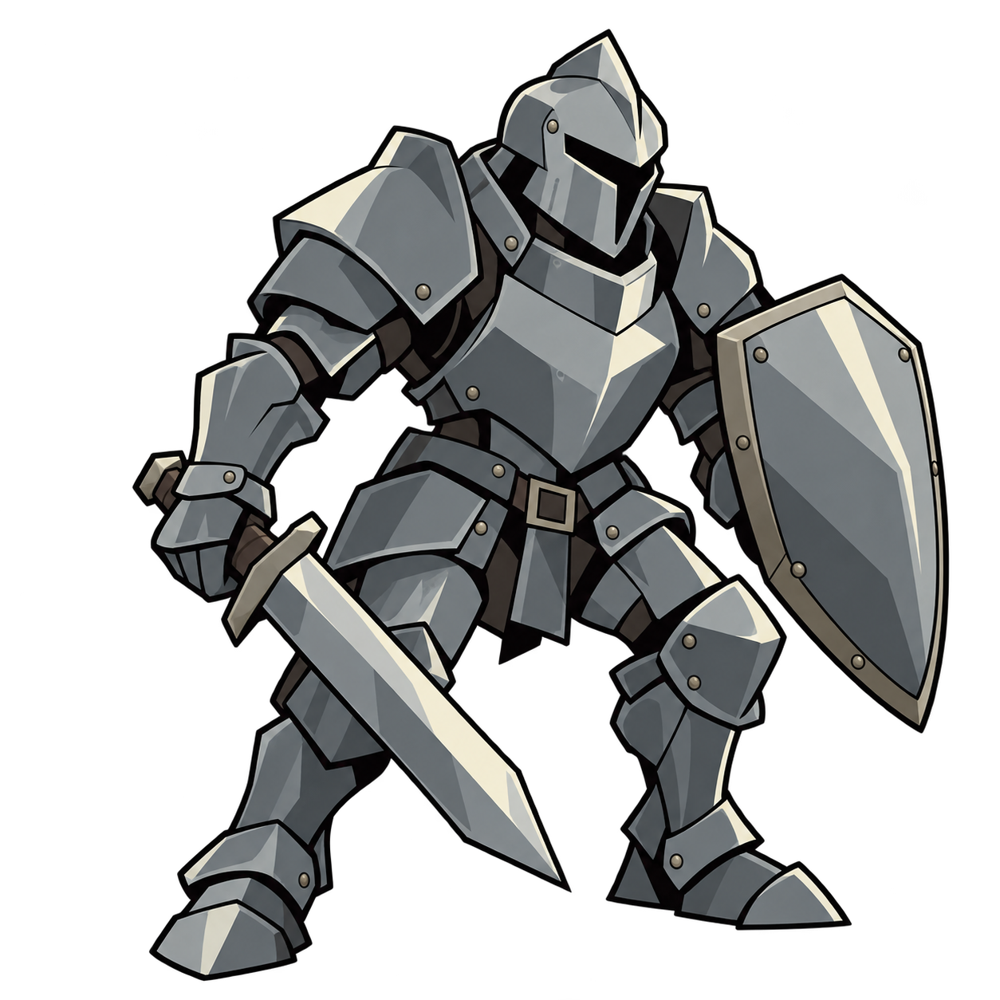
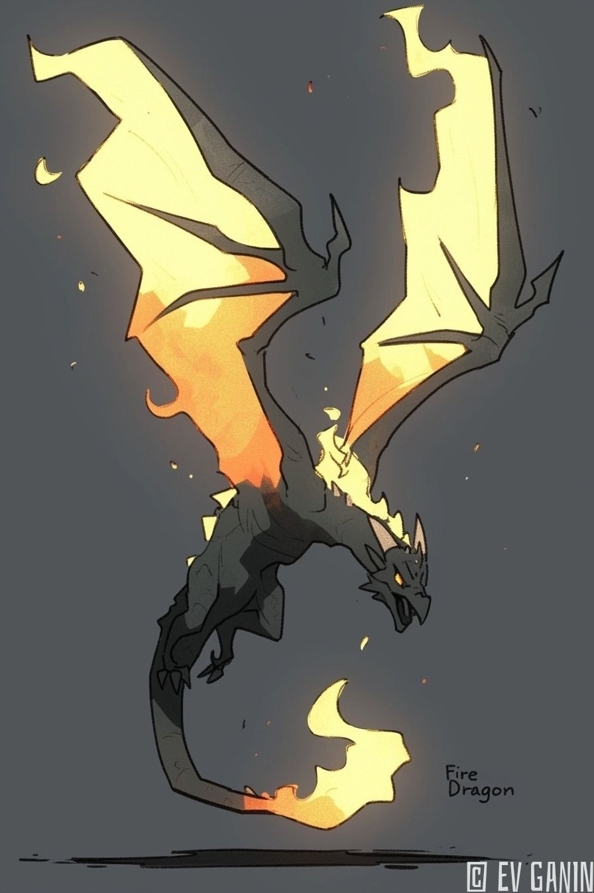
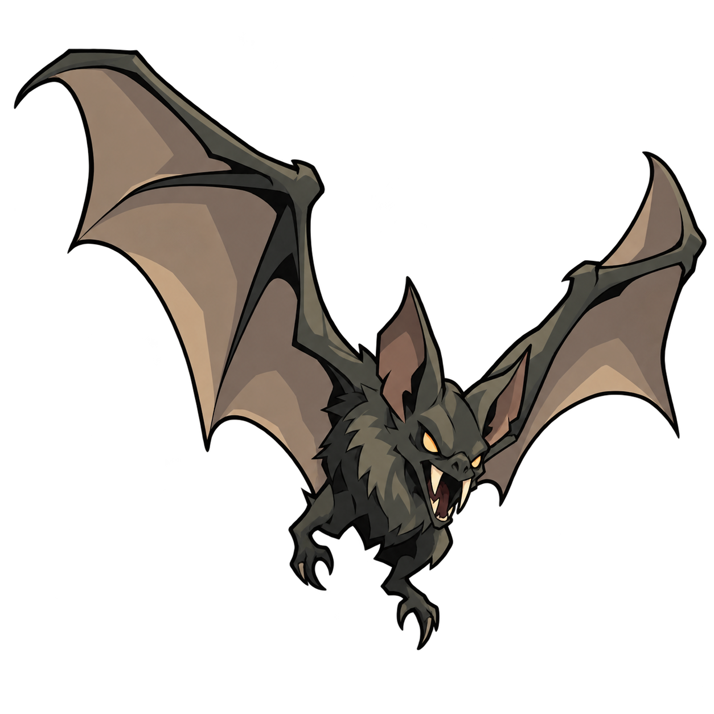
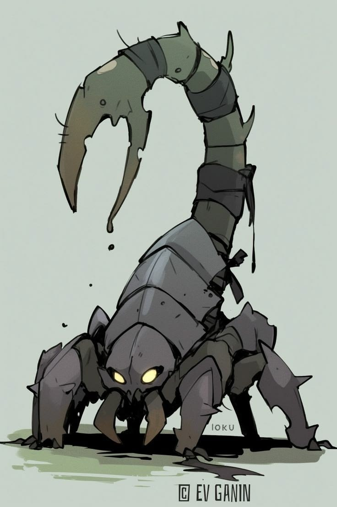
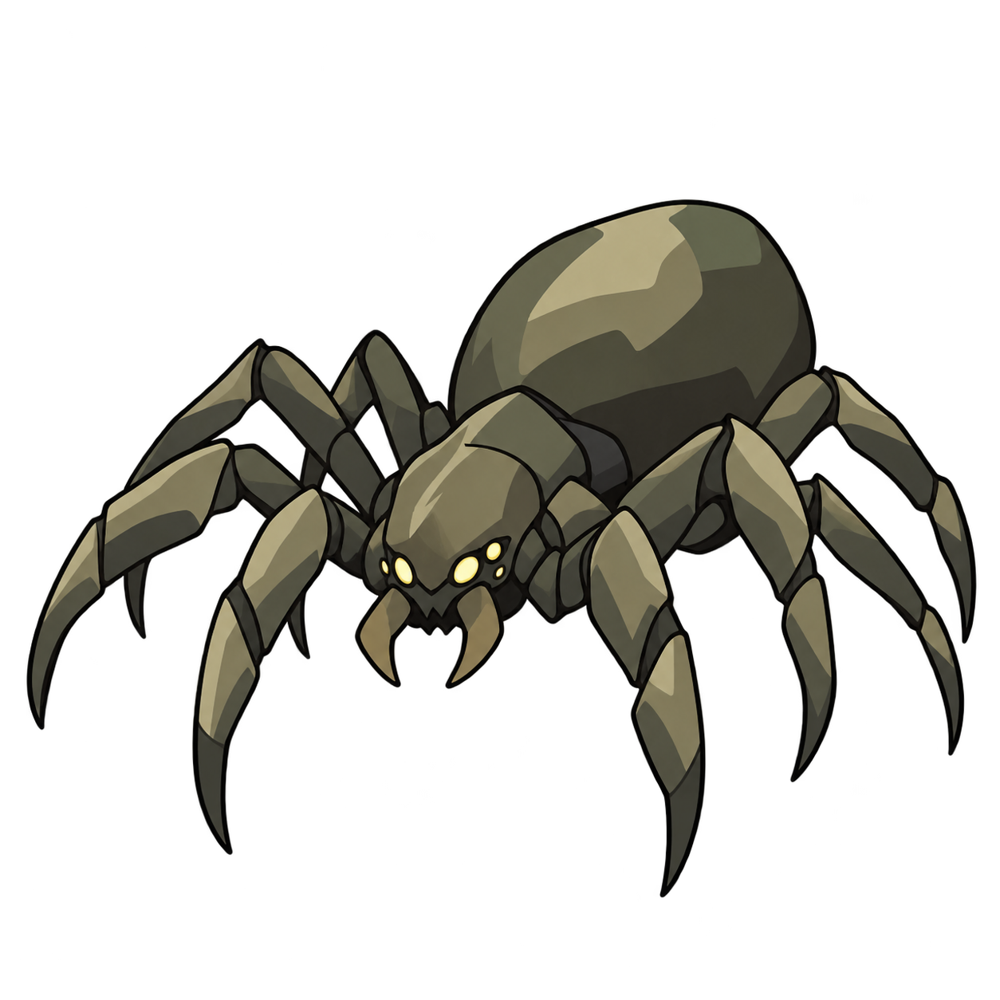
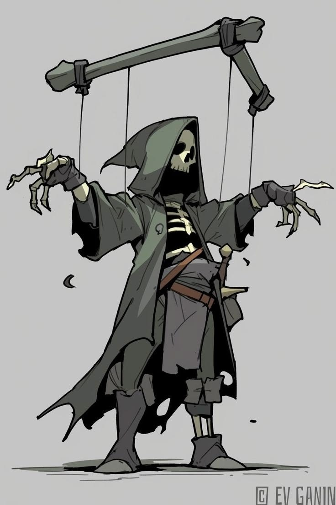
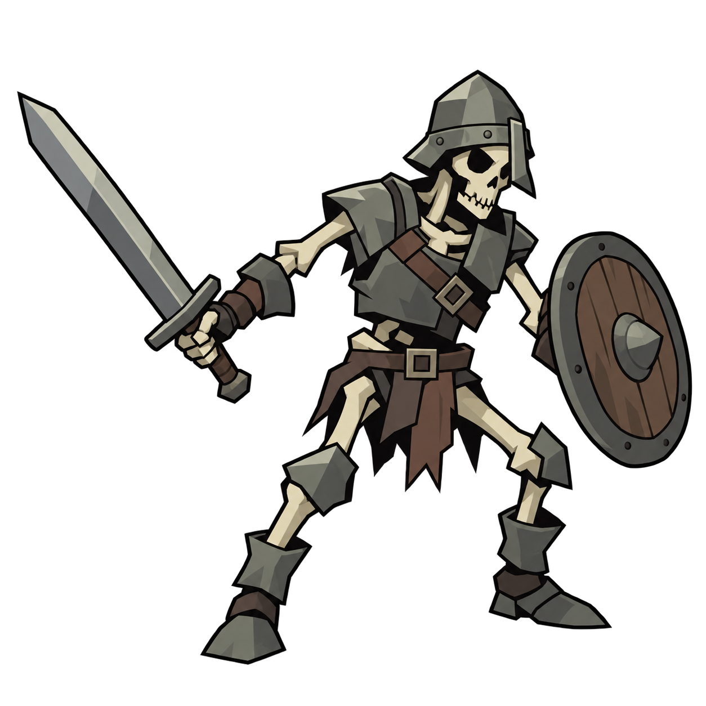

네 몬스터 · 레퍼런스와 재작업 비교
기존 네 Idle을 보관하고 다시 그렸습니다. 탁한 회녹색·먹색, 불규칙한 잉크선, 큰 면과 깊은 검은 그림자를 기준으로 대조했습니다. 전투 규칙·공격 시간·이름은 유지했습니다.
전체 몬스터 표 · 내장 이미지 생성 프롬프트 · 갑옷 구조 참고
움직이는 갑옷
곧게 선 전시 갑옷 자세, 비어 있는 투구와 관절, 무광의 탁한 철색.

그림체 레퍼런스
이전 수정 Idle
수정 Idle흡혈박쥐
큰 가죽 날개와 작은 몸, 낮은 채도의 막과 깊은 먹색 그림자.

그림체 레퍼런스
이전 수정 Idle
수정 Idle거미
여덟 다리의 자연스러운 연결, 큰 몸통 면과 검은 하부 음영.

그림체 레퍼런스
이전 수정 Idle
수정 Idle해골 전사
빈 눈구멍, 누런 뼈와 어두운 갈비뼈 사이, 낡은 검과 나무 방패.

그림체 레퍼런스
이전 수정 Idle
수정 Idle